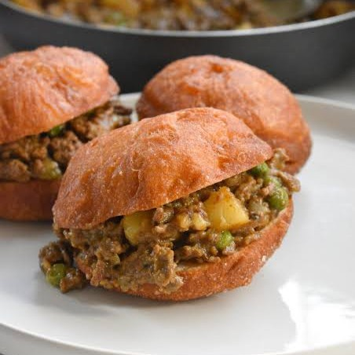
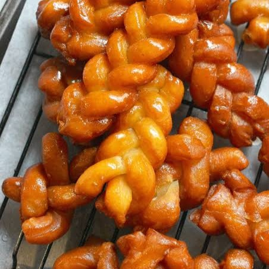

Bereken Jou Aanvangskapitaal
Kies die tipe voedselbesigheid wat jy graag wil begin.
1
Kategorie
2
Maaltyd/Drankie
3
Sakrekenaar
Kos
Drankies

Gewilde Straatkos
Jou vinnigverkopende gunstelinge.

Tradisionele Maaltye
Tydlose Suid-Afrikaanse gunstelinge.

Ligte Maaltye
’n Klein ietsie lekker.

Gebak
Tuisgemaakte lekkernye.